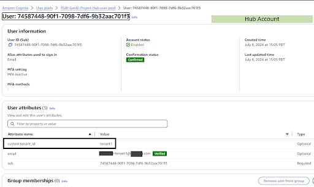
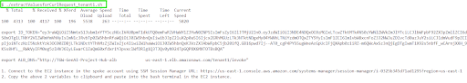
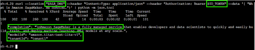

Blog 2
⚠️ Lưu ý: Các thông tin dưới đây chỉ nhằm mục đích tham khảo, vui lòng không sao chép nguyên văn cho bài báo cáo của bạn kể cả warning này.
Mở rộng quy mô các trường hợp sử dụng Generative AI – Phần 1: Kiến trúc đa thuê (multi-tenant) kiểu hub and spoke sử dụng AWS Transit Gateway
Generative AI tiếp tục định hình cách các doanh nghiệp tiếp cận đổi mới và giải quyết vấn đề. Khách hàng đang dịch chuyển từ giai đoạn thử nghiệm sang mở rộng các use case generative AI trong tổ chức, với ngày càng nhiều doanh nghiệp tích hợp hoàn toàn các công nghệ này vào quy trình cốt lõi. Sự tiến hóa này trải dài qua các dòng kinh doanh (LOBs), các đội nhóm, và các nhà cung cấp phần mềm dạng dịch vụ (SaaS). Mặc dù nhiều khách hàng AWS thường bắt đầu bằng một tài khoản AWS đơn để chạy các proof-of-concept generative AI, việc tăng cường áp dụng và chuyển lên môi trường production đã dẫn đến những thách thức mới. Các thách thức này bao gồm quản lý và mở rộng triển khai hiệu quả, cũng như trừu tượng hóa và tái sử dụng các vấn đề chung như đa tenancy, cách ly (isolation), xác thực (authentication), ủy quyền (authorization), mạng an toàn (secure networking), giới hạn tốc độ (rate limiting) và caching. Để giải quyết những thách thức này một cách hiệu quả, kiến trúc đa tài khoản (multi-account) chứng tỏ có lợi, đặc biệt cho các nhà cung cấp SaaS phục vụ nhiều khách hàng doanh nghiệp, các tập đoàn lớn với các đơn vị riêng biệt, và các tổ chức có yêu cầu tuân thủ nghiêm ngặt. Cách tiếp cận đa tài khoản này giúp duy trì một hệ thống được kiến trúc tốt (well-architected) bằng cách cung cấp tổ chức tốt hơn, bảo mật và khả năng mở rộng cao hơn trong môi trường AWS của bạn. Nó cũng cho phép bạn quản lý các vấn đề chung này hiệu quả hơn khi bạn mở rộng các triển khai generative AI của mình. Trong loạt bài hai phần này, chúng tôi thảo luận mô hình kiến trúc hub và spoke để xây dựng kiến trúc đa-tenant và đa tài khoản. Mẫu này hỗ trợ trừu tượng hóa các dịch vụ dùng chung giữa các use case và các đội nhóm, giúp tạo ra hệ thống generative AI an toàn, có khả năng mở rộng và đáng tin cậy. Ở Phần 1, chúng tôi giới thiệu một hub tập trung cho các trừu tượng dịch vụ generative AI và các spoke dành riêng cho từng tenant, sử dụng AWS Transit Gateway để kết nối giữa các tài khoản. Tài khoản hub đóng vai trò là điểm vào cho yêu cầu người dùng cuối, tập trung các chức năng dùng chung như xác thực, ủy quyền, truy cập mô hình và quyết định định tuyến. Cách tiếp cận này giảm bớt nhu cầu triển khai các chức năng này riêng rẽ trong từng tài khoản spoke. Khi có thể, chúng tôi sử dụng các điểm cuối VPC (VPC endpoints) để truy cập các dịch vụ AWS. Trong Phần 2, chúng tôi thảo luận một biến thể kiến trúc này sử dụng AWS PrivateLink để chia sẻ an toàn endpoint tập trung trong tài khoản hub cho các đội trong tổ chức hoặc với đối tác bên ngoài. Trọng tâm trong cả hai bài là tập trung hóa xác thực, ủy quyền, truy cập mô hình và mạng an toàn đa tài khoản để onboarding và mở rộng use case generative AI với Amazon Bedrock. Chúng tôi không thảo luận các khả năng hệ thống khác như prompt catalog, prompt caching, versioning, đăng ký mô hình (model registry) và chi phí. Tuy nhiên, những khả năng đó có thể là phần mở rộng của kiến trúc này.
Solution overview
Giải pháp của chúng tôi thực hiện mẫu hub và spoke cung cấp hệ thống an toàn, có khả năng mở rộng để quản lý các triển khai generative AI trên nhiều tài khoản. Về cốt lõi, kiến trúc bao gồm một tài khoản hub tập trung làm điểm vào cho các yêu cầu, bổ sung với các tài khoản spoke chứa các tài nguyên dành riêng cho từng tenant. Sơ đồ sau minh họa kiến trúc này:

Tài khoản hub đóng vai trò là tài khoản trung tâm, cung cấp các dịch vụ chung cho nhiều tenant và đóng vai trò là entry point cho các yêu cầu từ người dùng cuối. Nó tập trung các chức năng dùng chung như authentication, authorization, và routing decisions, giúp loại bỏ nhu cầu phải triển khai riêng các chức năng này cho từng tenant. Tài khoản hub được vận hành và bảo trì bởi core engineering team.
Cơ sở hạ tầng của hub bao gồm public và private VPCs, một internet-facing Application Load Balancer (ALB), Amazon Cognito để thực hiện authentication, và các VPC endpoints cần thiết cho các dịch vụ của AWS.
Các tài khoản spoke chứa các tài nguyên dành riêng cho từng tenant, chẳng hạn như AWS Identity and Access Management (IAM) role permissions và các tài nguyên Amazon Bedrock. Các tài khoản spoke có thể được quản lý bởi core engineering team hoặc bởi chính tenant, tùy thuộc vào nhu cầu của tổ chức.
Mỗi tài khoản spoke duy trì private VPC riêng, VPC interface endpoints cho Amazon Bedrock, các IAM roles và permissions cụ thể, cùng các account-level controls. Các thành phần này được kết nối thông qua Transit Gateway, giúp cung cấp secure cross-account networking và quản lý luồng lưu lượng giữa các hub và spoke VPCs. Luồng yêu cầu qua hệ thống (như được mô tả trong sơ đồ kiến trúc trước đó) bao gồm các bước sau: Một người dùng (đại diện cho Tenant 1, 2, hoặc N) truy cập client application.
Client application trong public subnet của tài khoản hub xác thực người dùng và nhận ID/JWT token. Trong ví dụ này, chúng ta sử dụng Amazon Cognito user pool làm identity provider (IdP).
Client application sử dụng các custom attributes trong JWT token để xác định tuyến tương ứng trong ALB. ALB, dựa trên context path, định tuyến yêu cầu đến tenant’s AWS Lambda function target group.
Tenant-specific Lambda function trong private subnet của tài khoản hub được gọi thực thi.
Hàm này assumes a cross-account role trong tài khoản của tenant. Hàm gọi Amazon Bedrock trong tài khoản spoke bằng cách tham chiếu regional DNS name của Amazon Bedrock VPCE. Mô hình được gọi thực thi và kết quả được gửi lại cho người dùng.
Kiến trúc này đảm bảo rằng các yêu cầu đều đi qua một central entry point trong khi vẫn duy trì được tenant isolation. Bằng cách gọi Amazon Bedrock trong tài khoản spoke, mỗi yêu cầu sẽ kế thừa account’s limits, access control, cost assignments, service control policies (SCPs), và các account-level controls khác. Mẫu mã nguồn (sample code) cho giải pháp này được chia thành hai phần:
Phần đầu tiên minh họa giải pháp cho một single hub and spoke account.
Phần thứ hai mở rộng giải pháp bằng cách triển khai thêm một spoke account khác.
Hướng dẫn chi tiết cho từng bước được cung cấp trong tệp repository README. Trong các phần tiếp theo, chúng tôi sẽ cung cấp outline cho các bước triển khai.
Prerequisites
Chúng tôi giả định rằng bạn đã quen thuộc với các kiến thức cơ bản về AWS networking, bao gồm Amazon Virtual Private Cloud (Amazon VPC) và các VPC constructs như route tables và các VPC interconnectivity options. Chúng tôi cũng giả định rằng bạn hiểu về multi-tenant architectures và các nguyên tắc cốt lõi của việc phục vụ nhiều tenant trên một shared infrastructure trong khi vẫn duy trì isolation.
Để triển khai giải pháp này, bạn cần có các prerequisites sau: Hub và spoke accounts (bắt buộc):
Hai tài khoản AWS: một hub account và một spoke account
Quyền truy cập vào amazon.titan-text-lite-v1 model trong spoke account
Additional spoke account (tùy chọn): Một tài khoản AWS thứ ba (spoke account dành cho tenant thứ hai)
Quyền truy cập vào anthropic.claude-3-haiku-20240307-v1:0 model trong second spoke account
Các yếu tố thiết kế (Design considerations)
Việc triển khai kiến trúc này bao gồm nhiều lựa chọn thiết kế quan trọng ảnh hưởng đến cách giải pháp vận hành, khả năng mở rộng và khả năng bảo trì. Trong phần này, chúng ta xem xét các yếu tố thiết kế này trên các thành phần khác nhau, giải thích lý do đằng sau mỗi lựa chọn và các phương án thay thế tiềm năng khi có thể.
Lambda functions
Trong thiết kế của chúng tôi, ALB target group được cấu hình là Lambda functions chạy trong hub account thay vì spoke account. Cách tiếp cận này cho phép centralized management của business logic, cũng như centralized logging và monitoring. Khi kiến trúc phát triển để bao gồm các chức năng dùng chung như prompt caching, semantic routing, hoặc sử dụng large language model (LLM) proxies (các middleware services cung cấp quyền truy cập thống nhất vào nhiều models trong khi xử lý rate limiting và request routing, như được thảo luận trong Part 2), việc triển khai các tính năng này trong hub account sẽ đảm bảo consistency giữa các tenant. Chúng tôi chọn Lambda functions để triển khai token validation và routing logic, tuy nhiên bạn cũng có thể sử dụng các tùy chọn compute khác như Amazon Elastic Container Service (Amazon ECS) hoặc Amazon Elastic Kubernetes Service (Amazon EKS) tùy thuộc vào preferences của tổ chức bạn.
Chúng tôi sử dụng 1-to-1 mapping giữa Lambda functions và từng tenant. Mặc dù logic hiện tại trong mỗi function là tương tự nhau, việc có một dedicated function cho từng tenant có thể giúp giảm thiểu các vấn đề noisy neighbor và hỗ trợ các cấu hình riêng biệt cho từng tenant tier, chẳng hạn như memory và concurrency.
VPC endpoints
Trong giải pháp này, chúng tôi sử dụng các dedicated Amazon Bedrock runtime VPC endpoints trong các spoke accounts. Việc sử dụng dedicated VPC endpoints cho từng spoke account phù hợp với các tổ chức mà operators của spoke account chịu trách nhiệm quản lý các tính năng tenant, chẳng hạn như cho phép truy cập models, thiết lập knowledge bases, và guardrails. Tùy thuộc vào policies của tổ chức, có thể triển khai một biến thể khác của kiến trúc này bằng cách sử dụng centralized Amazon Bedrock runtime VPC trong hub account (như được mô tả trong Part 2). Centralized VPC endpoints phù hợp với các tổ chức mà central engineering team quản lý các tính năng cho các tenants.
Các yếu tố khác như costs, access control, và endpoint quotas cần được xem xét khi lựa chọn giữa centralized hoặc dedicated approach cho vị trí của Amazon Bedrock VPC endpoints. VPC endpoint policies với centralized approach có thể gặp phải giới hạn 20,480-character limit khi số lượng tenants tăng lên. Có hourly fees cho VPC endpoints và transit gateway attachments được provisioned bất kể có được sử dụng hay không. Nếu VPC endpoints được provisioned trong spoke accounts, mỗi tenant sẽ chịu thêm hourly fees.
Client application
Vì mục đích trình diễn, client application trong giải pháp này được deployed trong public subnet của hub VPC. Ứng dụng có thể được deployed trong một account bên ngoài cả hub và spoke VPCs, hoặc deployed at the edge như một single-page application (SPA) bằng cách sử dụng Amazon CloudFront và Amazon Simple Storage Service (Amazon S3).
Tenancy
Các enterprises sử dụng nhiều tenancy models khác nhau khi scaling generative AI, mỗi loại có advantages và disadvantages riêng. Giải pháp của chúng tôi triển khai silo model, gán mỗi tenant cho một dedicated spoke account. Đối với các organizations nhỏ hơn, có ít tenants và yêu cầu isolation không quá nghiêm ngặt, một cách tiếp cận thay thế là pooled model (nhiều tenants trong một spoke account) có thể phù hợp hơn — trừ khi họ có kế hoạch scale significantly trong tương lai hoặc có yêu cầu tuân thủ cụ thể (compliance requirements). Để biết thêm thông tin về multi-tenancy design, xem Let’s Architect! Designing architectures for multi-tenancy. Cell-based architectures cho multi-tenant applications có thể mang lại lợi ích như fault isolation và scaling. Xem Reducing the Scope of Impact with Cell-Based Architecture để biết thêm chi tiết.
Frontend gateway
Trong giải pháp này, chúng tôi chọn ALB làm entry point cho các requests. ALB mang lại nhiều lợi thế cho generative AI use case của chúng tôi:
Long-running connections – ALB hỗ trợ các kết nối lên đến 4,000 seconds, có lợi cho các phản hồi LLM có thể mất hơn 30 seconds để hoàn thành.
Scalability – ALB có thể xử lý khối lượng lớn concurrent connections, phù hợp cho các enterprise-scale deployments.
Integration with AWS WAF – ALB tích hợp liền mạch với AWS WAF, cung cấp enhanced security và protection chống lại các common web exploits.
Amazon API Gateway là một tùy chọn thay thế khi cần API versioning, usage plans, hoặc các granular API management capabilities, và khi message sizes và response times phù hợp với các quotas của nó. AWS AppSync là một tùy chọn khác phù hợp khi muốn expose LLMs thông qua GraphQL interface. Hãy chọn gateway phù hợp nhất với customers của bạn:
ALB xử lý hiệu quả các high-volume, long-running connections.
API Gateway cung cấp comprehensive REST API management.
AWS AppSync mang lại real-time GraphQL capabilities.
Đánh giá từng tùy chọn dựa trên yêu cầu về response time, API needs, scale demands, và specific use case của ứng dụng bạn. Mặc dù bài viết này trình diễn kết nối bằng HTTP để đơn giản hóa, nhưng điều này không được khuyến nghị cho production. Các production deployments luôn phải triển khai HTTPS với proper SSL/TLS certificates để duy trì secure communication.
IP addressing
AWS CloudFormation template để deploy solution resources sử dụng example CIDRs. Khi deploy kiến trúc này trong second spoke account, hãy sử dụng các unique IP addresses không bị overlap với các môi trường hiện có. Transit Gateway hoạt động ở Layer 3 và yêu cầu các distinct IP spaces để route traffic giữa các VPCs.
Deploy a hub and spoke account
Trong phần này, chúng tôi thiết lập môi trường AWS Command Line Interface (AWS CLI) cục bộ để deploy giải pháp này trong hai AWS accounts. Hướng dẫn chi tiết được cung cấp trong repository README. Deploy một CloudFormation stack trong hub account, và một stack khác trong spoke account.
Configure connectivity giữa hub và spoke VPCs bằng Transit Gateway attachments.
Tạo một Amazon Cognito user với giá trị tenant1 cho custom user attribute có tên tenant_id.
Tạo một item trong Amazon DynamoDB table để map tenant ID với model access và routing information cụ thể cho tenant, trong ví dụ của chúng tôi là tenant1.


Xác thực kết nối (Validate connectivity)
Trong phần này, chúng ta xác thực connectivity từ một test application trong hub account đến Amazon Bedrock model trong spoke account. Chúng ta thực hiện điều này bằng cách gửi một curl request từ một EC2 instance (đại diện cho client application của chúng ta) đến ALB. Cả EC2 instance và ALB đều nằm trong public subnet của hub account. Request và response sau đó được định tuyến thông qua Transit Gateway attachments giữa hub và spoke VPCs. Ảnh chụp màn hình sau đây cho thấy quá trình thực thi một utility script trên local workstation của bạn, script này authenticates một người dùng và exports các necessary variables. Những variables này sẽ được sử dụng để construct curl request trên EC2 instance.

Ảnh chụp màn hình tiếp theo cho thấy curl request đang được thực thi từ EC2 instance đến ALB. Response xác nhận rằng request đã được xử lý thành công và được phục vụ bởi amazon.titan-text-lite-v1 model, đây là model được mapped đến người dùng này (tenant1). Model này được hosted trong spoke account. 
Deploy a second spoke account
Trong phần này, chúng ta mở rộng deployment để bao gồm một second spoke account cho một additional tenant. Chúng ta xác thực multi-tenant connectivity bằng cách gửi một curl request khác từ cùng một EC2 instance đến ALB trong hub account. Detailed instructions được cung cấp trong repository README. Ảnh chụp màn hình sau cho thấy response cho request này, chứng minh rằng hệ thống xác định và định tuyến requests dựa trên thông tin tenant một cách chính xác. Trong trường hợp này, giá trị tenant_id attribute của người dùng là tenant2, và request được định tuyến thành công đến anthropic.claude-3-haiku-20240307-v1:0 model, model này được mapped đến tenant2 trong second spoke account.
Clean up
Để clean up các resources của bạn, hãy hoàn thành các bước sau: Nếu bạn đã tạo các optional resources cho second spoke account, hãy xóa chúng: Change the directory đến genai-secure-patterns/hub-spoke-transit-gateway/scripts/optional
Run the cleanup script ./cleanupOptionalStack.sh
Clean up main stack: Change the directory đến genai-secure-patterns/hub-spoke-transit-gateway/scripts/
Run the cleanup script ./cleanup.sh
Conclusion
Khi các tổ chức ngày càng adopt và scale các generative AI use cases trên nhiều teams và LOBs (lines of business) khác nhau, nhu cầu về secure, scalable, và reliable multi-tenant architectures ngày càng tăng. Loạt bài gồm hai phần này đáp ứng nhu cầu đó bằng cách cung cấp hướng dẫn về cách implement hub and spoke architecture pattern. Bằng cách adopting những well-architected practices như vậy ngay từ đầu, bạn có thể xây dựng các scalable và robust solutions giúp khai thác toàn bộ tiềm năng của generative AI trong tổ chức của bạn. Trong bài viết này, chúng ta đã trình bày cách set up một centralized hub account lưu trữ các shared services như authentication, authorization, và networking bằng Transit Gateway. Chúng ta cũng đã minh họa cách configure các spoke accounts để lưu trữ các tenant-specific resources như Amazon Bedrock. Hãy thử các code samples được cung cấp để xem architecture này hoạt động như thế nào trong thực tế. Part 2 sẽ khám phá một cách implementation thay thế bằng cách sử dụng PrivateLink để interconnect các VPCs trong hub và spoke accounts.
About the Authors
Nikhil Penmetsa là Senior Solutions Architect tại AWS. Anh giúp các tổ chức hiểu rõ best practices liên quan đến các advanced cloud-based solutions. Anh đam mê việc diving deep cùng khách hàng để tạo ra các solutions vừa cost-effective, secure, và performant. Khi không ở văn phòng, bạn thường thấy anh putting in miles trên xe đạp đường dài hoặc hitting the open road trên chiếc motorbike của mình.
 Ram Vittal là Principal ML Solutions Architect tại AWS. Ông có hơn 3 decades of experience trong việc architecting và building distributed, hybrid, and cloud applications. Ông đam mê việc xây dựng các secure và scalable AI/ML và big data solutions để giúp enterprise customers trong hành trình cloud adoption và optimization nhằm cải thiện business outcomes của họ. Trong thời gian rảnh, ông rides his motorcycle và walks with his 3-year-old Sheepadoodle!
Ram Vittal là Principal ML Solutions Architect tại AWS. Ông có hơn 3 decades of experience trong việc architecting và building distributed, hybrid, and cloud applications. Ông đam mê việc xây dựng các secure và scalable AI/ML và big data solutions để giúp enterprise customers trong hành trình cloud adoption và optimization nhằm cải thiện business outcomes của họ. Trong thời gian rảnh, ông rides his motorcycle và walks with his 3-year-old Sheepadoodle!